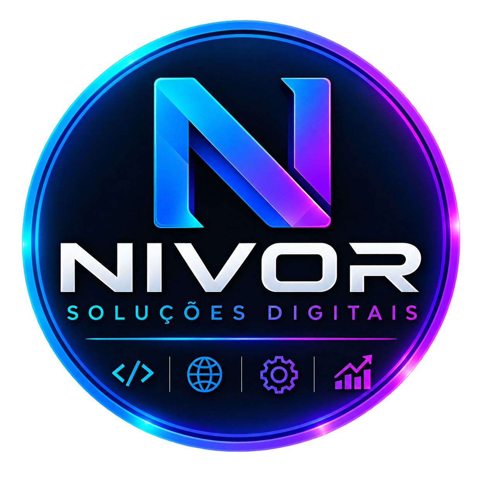

O Nivor é uma plataforma online para estabelecimentos gerenciarem seu cardápio digital, produtos, categorias, disponibilidade dos itens e o fluxo de pedidos. A liberação do ambiente acontece após a confirmação da assinatura.
Após a aprovação do pagamento, iniciamos o processo de ativação do estabelecimento.
O ambiente é preparado com os dados e a identidade visual do estabelecimento.
O cliente recebe o acesso ao painel administrativo para gerenciar o próprio cardápio.
O acesso à plataforma é mantido enquanto a assinatura mensal estiver ativa.